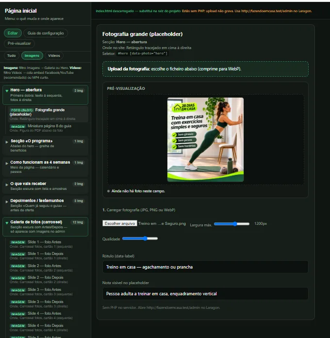
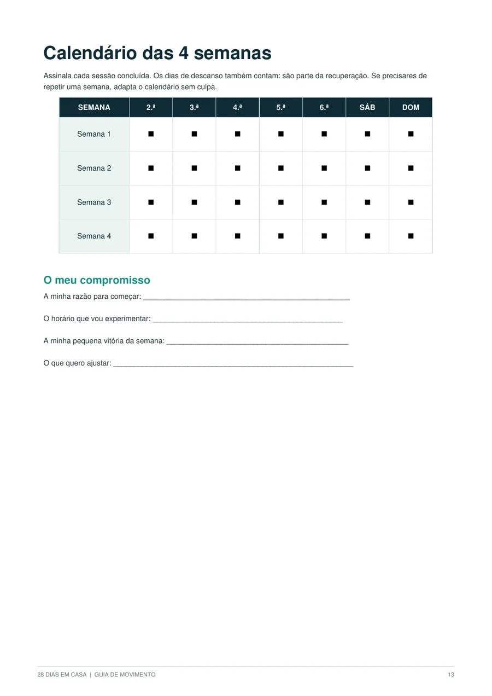
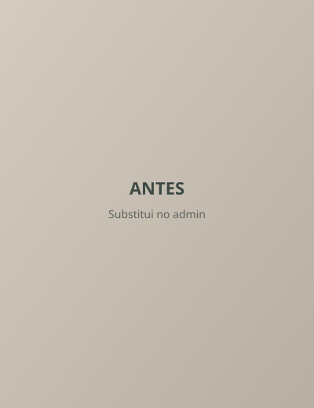

Plano de 4 semanas
20 sessões, 5 por semana, com dois dias de descanso ou caminhada tranquila. Sem pesos nem máquinas.
Guia em PDF · 15 páginas
28 dias em casa: 20 sessões em 4 semanas, 5 por semana. Três níveis, sessões de 20 a 30 minutos e exercícios para fazer em casa, sem pesos nem máquinas.

Pessoa adulta a treinar em casa, enquadramento verticalO programa
Há exercícios publicados por todo o lado. O que costuma faltar é uma ordem. O 28 dias em casa tira a escolha do caminho: abres o PDF na semana em que estás e a sessão do dia está lá, com exercícios, voltas, repetições ou tempos.
20 sessões, 5 por semana, com dois dias de descanso ou caminhada tranquila. Sem pesos nem máquinas.
4 exercícios base com fotografia: agachamento, flexão inclinada, ponte de glúteos e bird-dog, com execução passo a passo e pontos de atenção.
A mesma sequência para começar e terminar cada sessão, para não teres de pensar nisso.
Assinalas cada sessão concluída e anotas data, nível, esforço e notas. Os dias de descanso também contam.
Notas práticas sobre sono, hidratação, alimentação e consistência, para organizar a semana.
Para controlares a intensidade de cada sessão e ajustares ao teu nível.
Precisas de espaço livre, de uma cadeira firme encostada à parede e de tempo para uma sessão. A flexão inclinada faz-se com as mãos numa bancada firme ou na parede.
Formato: um PDF A4 de 15 páginas, para ver no telemóvel, no tablet, no computador ou imprimir.
Níveis
As sessões são as mesmas nos três níveis. O que muda é o número de voltas, as repetições e as pausas.
 Pessoa a começar, agachamento apoiada numa cadeira
Pessoa a começar, agachamento apoiada numa cadeira
Nível 1
1 a 2 voltas e pausas maiores. Começa por este nível se tiveres dúvidas sobre o teu ponto de partida.
 Pessoa a treinar, flexão inclinada na bancada
Pessoa a treinar, flexão inclinada na bancada
Nível 2
2 voltas. Para quem já tem alguma regularidade e quer aumentar o volume sem mudar de movimentos.
 Pessoa a treinar, prancha ou bird-dog no tapete
Pessoa a treinar, prancha ou bird-dog no tapete
Nível 3
Até 3 voltas, apenas se mantiveres a técnica e recuperares bem. Aumenta apenas uma variável de cada vez.
4 semanas
Cada semana tem 5 sessões. Nos outros dois dias, descansas ou fazes uma caminhada tranquila e mobilidade suave. Se precisares de repetir uma semana, adapta o calendário.
Aprender os movimentos
As 5 sessões da semana, com voltas e repetições, e como ajustar ao teu nível.
Continuação do plano de 4 semanas, com as sessões da semana e o ajuste de volume ao teu nível.
Continuação do plano de 4 semanas, com as sessões da semana e o ajuste de volume ao teu nível.
Última semana do plano, que termina com uma revisão das 4 semanas e o registo do teu percurso.

Incluído
Um PDF A4 de 15 páginas. Tudo o que está nesta lista faz parte do guia; nada aqui é material que não existe.
Duas páginas reais do guia. Toca para ampliar.
Extra opcional no checkout
Um PDF de 15 páginas com 28 receitas simples: 7 pequenos-almoços, 7 almoços, 7 jantares e 7 lanches, com ingredientes comuns em Portugal. Estão organizadas numa semana-tipo que podes repetir ou trocar ao longo das 4 semanas, com uma lista de compras semanal de base para facilitar as idas ao supermercado.
7,90 € IVA incluído
Opção disponível no checkout, adicional ao guia.
São ideias de cozinha prática para organizar a semana. Não são um plano alimentar, não substituem um nutricionista e não fazem promessas de peso ou de saúde.
Testemunhos
Ainda não há testemunhos publicados nesta página.
Este espaço está reservado para depoimentos reais e autorizados dos leitores do guia. Preferimos deixá-lo vazio a inventar pessoas, fotografias, avaliações ou resultados.
Comunidade
Fotografias autorizadas pelas pessoas que aparecem. Desliza para o lado — o carrossel também avança sozinho.


Exemplo de slide — troca por fotos autorizadas no admin (slide 1).
Conteúdo real, com autorização. Não são garantidos resultados iguais para todas as pessoas.
A tua oferta
Guia em PDF com fotografias de referência
Inclui
Guia de receitas não incluído: é um extra opcional de 7,90 €, disponível no checkout.
14,90 €
Vale para o guia 28 dias em casa e para o guia de receitas. Podes pedir o reembolso nos 14 dias seguintes à compra, sem indicar o motivo, por e-mail para contatomarcospaulo1002@gmail.com, com o e-mail usado na compra.
Também podes usar reembolso.kiwify.com.br, mas o pedido por e-mail é aceite durante os 14 dias. O reembolso é feito pelo mesmo meio de pagamento e o acesso à área de membros é retirado. Vê a cláusula 6 dos Termos e Condições.
Esta garantia está alinhada com o direito legal de livre resolução de 14 dias nas compras à distância. Pagamento processado pela Kiwify.
Dúvidas
O acesso fica disponível logo após a confirmação do pagamento, na área de membros da Kiwify. A Kiwify envia o link de acesso para o e-mail que indicaste no checkout.
Não. Esta versão é um PDF com fotografias de referência.
Não precisas de pesos nem máquinas. O guia pede roupa confortável, água, espaço livre numa superfície estável e não escorregadia, e uma cadeira firme, sem rodas, encostada à parede. A flexão inclinada faz-se com as mãos numa bancada firme ou na parede.
Aquecimento de 5 minutos, parte principal de 12 a 20 minutos e retorno à calma de 3 a 5 minutos. O tempo é uma referência: podes começar com menos.
Sim, há um nível iniciante. Começa por esse nível se tiveres dúvidas, respeita os teus limites e interrompe qualquer exercício em caso de dor ou mal-estar.
O plano usa movimentos básicos. Os níveis intermédio e avançado aumentam as voltas e as repetições para quem já tem alguma regularidade.
Sim, para uso pessoal. Não é permitido revender nem partilhar o ficheiro.
O guia termina com uma revisão das 4 semanas. Podes repetir as sessões que forem confortáveis, ajustando a progressão à tua condição. Depois de descarregares o PDF, o ficheiro fica contigo.
Não. É um pagamento único de 14,90 €.
Tens 14 dias a contar da compra para pedir o reembolso, sem indicar o motivo, por e-mail para contatomarcospaulo1002@gmail.com (também podes usar reembolso.kiwify.com.br, mas o pedido por e-mail é aceite durante os 14 dias). Vale para o guia e para o guia de receitas, em separado ou em conjunto. O reembolso é feito pelo mesmo meio de pagamento, e o acesso à área de membros é retirado.
4 semanas escritas. A sessão 1 já está na página 8. Sem procurar exercícios, sem pesos, sem sair de casa.
Mensagens
O que dizem sobre o guia
Capturas ou textos autorizados. Desliza com o dedo no telemóvel.